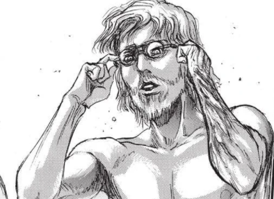
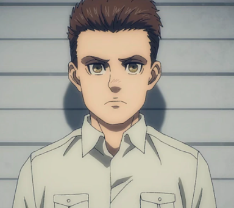
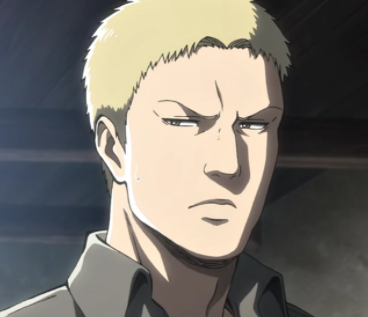
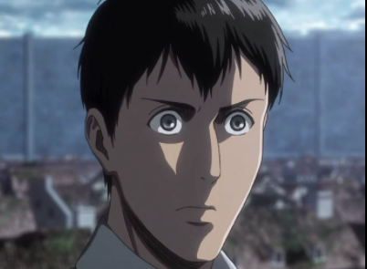

Marley is a nation located beyond the Walls and across the ocean from Paradis Island. Marley was once conquered by Eldia in ancient times, but during the Great Titan War, the Marleyans rose up and subjugated all of Eldia's territory with the exception of Paradis Island. In the present, Marley sustains its global power using the power of the Titans possessed by the Warrior Unit, but it is losing its status due to lagging behind other nations in technological progress. Marley serves as the main antagonist to the Eldians inside the Walls and filled Paradis Island with Titans to keep them inside. In year 854, Marley officially declared war on Paradis Island.
Zeke Yeager

Zeke Yeager was the former Captain of Marley's Warrior Unit, assigned to take the Founding Titan from the Eldians of Paradis Island. He was the inheritor of the Beast Titan, and was considered to be the strongest warrior by Reiner Braun, contrasting Levi Ackerman's title of "humanity's strongest soldier. He manipulated and deceived both sides of the war between Eldia and Marley in order to achieve his own agenda of causing the extinction of his own people, which he viewed as "salvation." Zeke was the son of Grisha Yeager and Dina Fritz, the older half-brother of Eren Yeager, and a member of the royal family from his mother's side.
Marcel Galliard

Marcel Galliard was the older brother of Porco Galliard and a childhood friend of Reiner Braun, Bertholdt Hoover and Annie Leonhart. He was part of the group of Warriors sent by Marley to attack the Walls of Paradis Island in year 845, but his mission was cut short by the sudden appearance of Ymir as a Pure Titan. He possessed the ability to transform into the Jaw Titan.
Reiner Braun

Reiner Braun is the Eldian Vice Chief of the Warriors and the main protagonist of Attack on Titan from the Marleyan perspective. He is the illegitimate son of an Eldian mother and a Marleyan father who grew up in Liberio's internment zone. Eventually, he was selected as a child to become one of Marley's Warriors. From a young age, he inherited the power of the Armored Titan. In the year 845, he infiltrated Paradis Island alongside Bertholdt Hoover, Annie Leonhart, and Marcel Galliard as part of an operation to reclaim the Founding Titan. He joined the Scout Regiment after graduating 2nd in the 104th Cadet Corps.
Bertholdt Hoover

Bertholdt Hoover was an Eldian who was part of Marley's Warrior Unit. He originated from the Liberio internment zone and possessed the ability to transform into the Colossal Titan, which he was one of the greatest threats to humanity within the walls. In the year 845, he infiltrated Paradis Island alongside Reiner Braun, Annie Leonhart, and Marcel Galliard as part of an operation to reclaim the Founding Titan. Afterwards, he joined and graduated the 104th Cadet Corps who was ranked 3rd in his class and became a member of the Scout Regiment until his identity as the Colossal Titan was revealed. Bertholdt was described by others as a weak-willed and quiet person.
Annie Lenohart
Annie Leonhart is a graduate of the 104th Cadet Corps and former member of the Military Police Regiment. Her exceptional skill with swords and unarmed combat earned her the 4th rank, but she is noted to be a lone wolf that struggles to work with others. She possesses the ability to transform into a Titan known as the Female Titan. She trained from an early age by her father,[2] and is selected as one of Marley's Warriors. In the year 845, she is sent on a mission to retrieve the Founding Titan, along with her fellow Warriors Reiner Braun, Bertholdt Hoover, and Marcel Galliard. As the Female Titan, she served as a major antagonist prior to being exposed and defeated by the Scout Regiment. After her defeat, she crystallized herself and was left in a comatose state. She is currently being held deep underground under the custody of the Scout Regiment.
Willy Tybur
Willy Tybur was an Eldian noble living in Marley. He was the head of the Tybur family and controlled Marley behind the shadows,[2] although he initially chose not to interfere with their military decisions. He sacrifsed his life to turn the world aginst "the Island Devials"